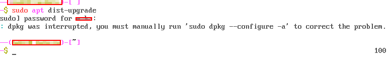

So the problem is a black screen after i did a kali linux upgrade of my kali 2020.4 vm machine (Virtual box)
Probable answer from https://unix.stackexchange.com/questions/610261/black-screen-after-upgrading-kali-linux

After I did this the following was my output

Hence I ran sudo dpkg --configure -a
The did the sudo apt dist-upgrade
sudo shutdown